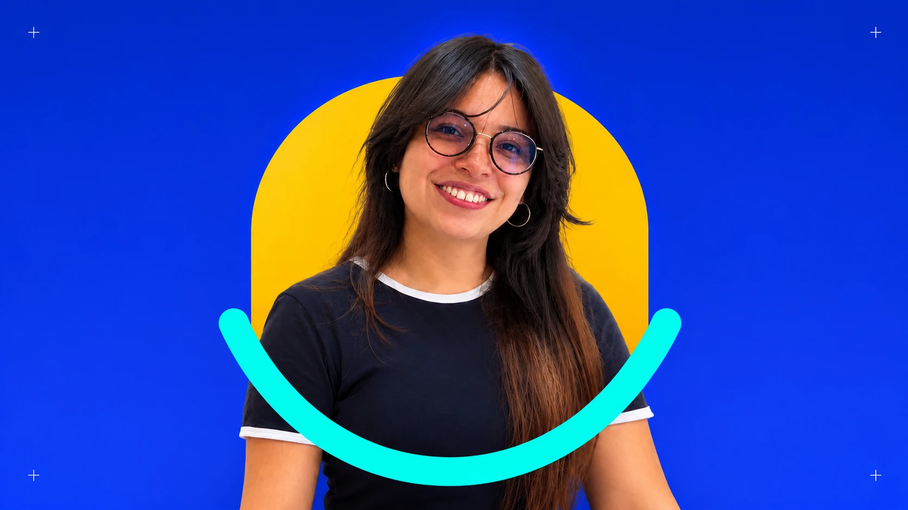

Diseño UX & Estrategia
- UX Research
- Pruebas de usabilidad
- Arquitectura de información
- Wireframing
- User Flows
- Service Design
- Auditoría heurística
- Accesibilidad (WCAG)
Diseñadora UX/UI • Product Designer
+3 años diseñando productos B2B, Sistemas de Diseño y experiencias accesibles (WCAG). Actualmente curso la Maestría en Creación de Experiencias de Usuario en la Universidad Icesi.

01 — Proyectos
Cada tarjeta abre la presentación completa publicada en Behance, sin salir de esta página.
02 — Sobre mí
Soy diseñadora UX/UI en Cali, Colombia. Diseño productos digitales complejos y soluciones B2B escalables, con foco en investigación con usuarios, arquitectura de información, sistemas de diseño y accesibilidad.
Mi trabajo consiste en optimizar flujos críticos y reducir la fricción operativa: que un proceso transaccional difícil se sienta simple para quien lo usa todos los días.
Universidad Icesi, Cali
Universidad Icesi, Cali
Cuadro de Honor en 5 semestres consecutivos y monitora académica.
Icesi · Desarrollo Web Básico (Platzi) · Español nativo · Inglés B2
03 — Experiencia